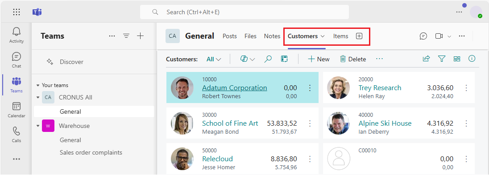

Business Central-Registerkarte in Microsoft Teams hinzufügen
GILT FÜR: Business Central Online
In Teams werden Registerkarten oben in Kanälen und Chats angezeigt, mit denen die Teilnehmer schnell auf relevante Informationen zugreifen können. In diesem Artikel werden verschiedene Möglichkeiten zum Hinzufügen einer Registerkarte erläutert, die Business Central-Daten anzeigt.

Über Business Central-Registerkarten
Eine Business Central-Registerkarte bietet eine fokussierte Ansicht von Listen- und -Kartenseiten von Business Central. Die Registerkarte zeigt nicht den vollständigen Business Central-Webclient. Es gibt weder Browserrand, Business Central-Banner (z. B. mit „Wie möchten Sie weiter verfahren“, Suche, Hilfe) oder oberes Navigationsmenü, nur Seiteninhalt und seine Aktionen. Der Inhalt ist interaktiv, Sie können also Aktionen und Links auswählen, Daten ändern und vieles mehr. Sie sind auf das beschränkt, was Sie sehen und tun können, indem Sie dieselben Berechtigungen verwenden, die Ihrem Konto in Business Central zugewiesen wurden.
Weitere Informationen darüber, wer den Inhalt einer Business Central Registerkarte sehen kann, finden Sie unter Wer kann den Inhalt einer Registerkarte sehen?.
Tipp
Sind Sie ein Entwickler? Sie können Registerkarten auch programmgesteuert mithilfe der Microsoft Graph-API hinzufügen. Weitere Informationen finden Sie unter Business Central-Registerkarten zu Teams hinzufügen.
Voraussetzungen
Zum Hinzufügen einer Business Central-Registerkarte müssen folgende Voraussetzungen erfüllt sein:
- Sie haben Zugriff auf Microsoft Teams.
- Sie haben eine Business Central-Lizenz.
- Sie haben die Business Central-App in Teams installiert. Weitere Informationen finden Sie unter Installieren Sie die Business Central App für Microsoft Teams.
Zum Anzeigen einer Business Central-Registerkarte, die von einem anderen Teilnehmer im Channel oder Chat hinzugefügt wurde, müssen folgende Voraussetzungen erfüllt sein:
- Sie haben Zugriff auf Microsoft Teams.
- Sie haben eine Business Central-Lizenz oder eingeschränkten Zugriff auf Business Central nur mit einer Microsoft 365-Lizenz. Erfahren Sie mehr unter Business Central Access mit Microsoft 365 Lizenzen.
- Sie haben die Business Central-App in Teams installiert.
Registerkarte mit empfohlenem Inhalt hinzufügen
Verwenden Sie diese Schritte, um eine Registerkarte hinzuzufügen, indem Sie auswählen, was aus einer leicht verfügbaren Liste empfohlener Inhalte angezeigt werden soll, die auf Ihrem Rollencenter basieren, ohne Teams zu verlassen. Weitere Informationen zu den Inhalten, aus denen Sie auswählen können, finden Sie unter Woher stammen die empfohlenen Inhalte?.
- Wählen Sie oben in einem Kanal oder Chat in Teams + Registerkarte hinzufügen aus.
Geben Sie im Suchen-Feld Business Central ein, wählen Sie dann das Business Central-Symbol aus, und warten Sie, bis das Konfigurationsfenster für die Business Central-Registerkarte angezeigt wird.
Die Option Aus empfohlenen Inhalten auswählen zeigt das Unternehmen in Business Central, mit dem Sie arbeiten. Wenn Sie Inhalte von einem anderen Unternehmen anzeigen möchten, wählen Sie das aktuelle Unternehmen aus und verwenden Sie dann die Optionen Umgebung und Unternehmen zur Angabe des Unternehmens, mit dem Sie zusammenarbeiten möchten.
Wählen Sie den Abwärtspfeil in der Option Registerkarteninhalte aus und wählen Sie den Inhalt aus, den Sie anzeigen möchten.
Einige Seiten können unterschiedliche Ansichten enthalten, bei denen es sich um Variationen der Seite handelt, die gefiltert wird, um bestimmte Daten anzuzeigen. Um die Ansicht für den Inhalt zu ändern, wählen Sie den Abwärtspfeil für die Option Bevorzugte Ansicht aus, und wählen Sie die Ansicht aus der Liste aus.
Weitere Informationen finden Sie unter Ansichten speichern und personalisieren.
- Wählen Sie Über diese Registerkarte auf dem Kanal posten aus, um automatisch eine Ankündigung im Teams-Kanal oder -Chat zu posten, um die Teilnehmer wissen zu lassen, dass Sie diese Registerkarte hinzugefügt haben.
- Wählen Sie Speichern aus.
Registerkarte über einen Seitenlink hinzufügen
Eine weitere Möglichkeit, einen Tab hinzuzufügen, indem Sie einen Link (URL) zu der Seite verwenden, die Sie anzeigen möchten. Diese Methode ist nützlich, wenn Sie einen bestimmten Business Central-Datensatz oder eine Listenseite anzeigen möchten, die in Ihrem Rollencenter nicht mit einem Lesezeichen versehen ist.
- Wählen Sie oben in einem Kanal oder Chat in Teams + Registerkarte hinzufügen aus.
- Geben Sie in das Suchen-Feld Business Central ein und wählen Sie dann das Business Central-Symbol aus.
Warten Sie, bis das Business Central-Registerkartenkonfigurationsfenster angezeigt wird, und wählen Sie dann die Option Stattdessen einen Business Central-Link einfügen aus.
- Gehen Sie zu Business Central, und öffnen Sie die Seite, die Sie auf der Registerkarte anzeigen möchten.
Kopieren Sie den Link auf die Seite.
Es gibt zwei Möglichkeiten, den Link zu kopieren. Die einfachste und bevorzugte Weise ist die Auswahl von Freigeben
 > Link kopieren. Die andere Möglichkeit besteht darin, die gesamte URL aus der Adressleiste des Browsers zu kopieren. Weitere Informationen finden Sie unter Freigeben von Business Central-Datensätzen und Seitenlinks.
> Link kopieren. Die andere Möglichkeit besteht darin, die gesamte URL aus der Adressleiste des Browsers zu kopieren. Weitere Informationen finden Sie unter Freigeben von Business Central-Datensätzen und Seitenlinks.Gehen Sie zurück zu Teams und fügen Sie den Link in das URL-Feld ein.
- Geben Sie im Feld Registerkartenname einen Namen ein, der auf der Registerkarte angezeigt wird.
- Wählen Sie Über diese Registerkarte auf dem Kanal posten aus, um automatisch eine Ankündigung im Teams-Kanal oder -Chat zu posten, um die Teilnehmer wissen zu lassen, dass Sie diese Registerkarte hinzugefügt haben.
- Wählen Sie Speichern aus.
Eine Registerkarte und ihren Inhalt ändern
Nachdem eine Registerkarte hinzugefügt wurde, können Sie bestimmte Änderungen an der Registerkarte vornehmen. Beispielsweise können Sie die Registerkarte umbenennen, verschieben und entfernen. Sie finden diese Aktionen in den Registerkartenoptionen, die verfügbar sind, indem Sie auf der Registerkarte den Abwärtspfeil auswählen.
Was den Inhalt einer Registerkarte betrifft, können Sie die Daten ändern, wenn Sie die Berechtigung dafür haben. Wenn Sie die Daten ändern, werden andere die Änderungen nicht sehen, bis sie die Registerkarte verlassen und zurückkehren. Gleiches gilt für Sie, wenn jemand anders Änderungen an Daten vornimmt. Sie können die Seite, die auf der Registerkarte angezeigt wird, nicht ändern, also entfernen Sie einfach die Registerkarte und fügen Sie eine andere hinzu.
Sie können auch Ihre Ansicht der Seite und ihrer Daten ändern, z. B. sortieren und das Layout zwischen Listen- und Kachelansicht wechseln. Wenn Sie diese Art von Änderungen vornehmen, haben sie keinen Einfluss darauf, was andere sehen. Sie sehen, was Sie ursprünglich gepostet haben, bis sie selbst ähnliche Änderungen vornehmen.
Ähnliche Informationen
Übersicht über die Integration von Business Central und Microsoft Teams
Die App Business Central für Microsoft Teams installieren
Gemeinsame Nutzung von Business Central-Datensätzen und Seitenlinks in Microsoft Teams
Teams FAQ
Suche nach Debitoren, Kreditoren und anderen Kontakten von Microsoft Teams
Ändern von Firmen- und anderen Einstellungen in Teams
Teams Problembehebung
Entwickeln für Teams Integration
Starten Sie eine kostenlose Testversion!
Kostenlose E-Learning-Module für Business Central finden Sie hier